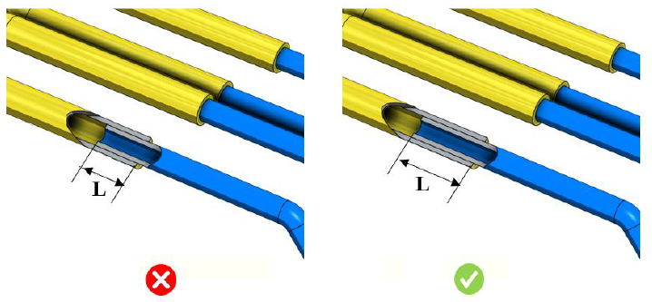

配管継手において、配管同士の十分な重なり長さは、良好な把持力と強度を確保します。
より良い把持力を確保するために、配管間には十分な重なり長さを確保することが推奨されます。重なり長さが不十分な場合、配管アセンブリの強度が低下し、重大な組立不良や損傷につながります。
ルールの構成において、ユーザーは最小重なり距離の値を設定できます。
重なり長さは、配管アセンブリおよびその実際の用途に応じて変化します。設計者は、十分な強度を得るために、配管間の重なり長さが適切に確保されていることを確認する必要があります。

ここで、
L = 重なり長さ
注記：
チューブの断面形状は円形であり、かつチューブ長さ方向に対して肉厚が一定である必要があります。